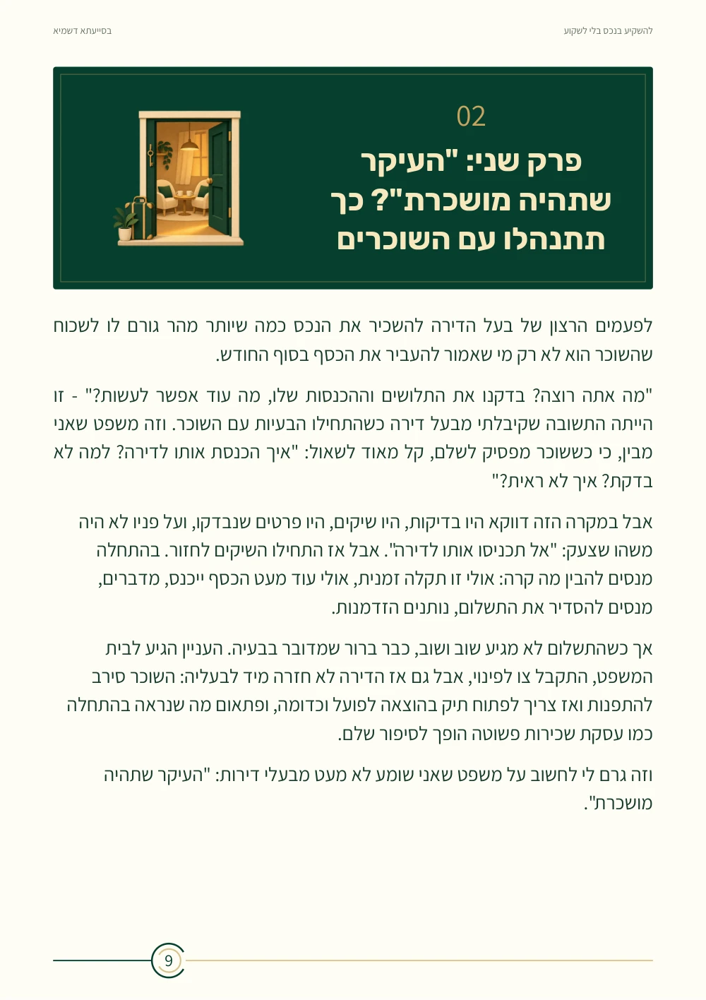
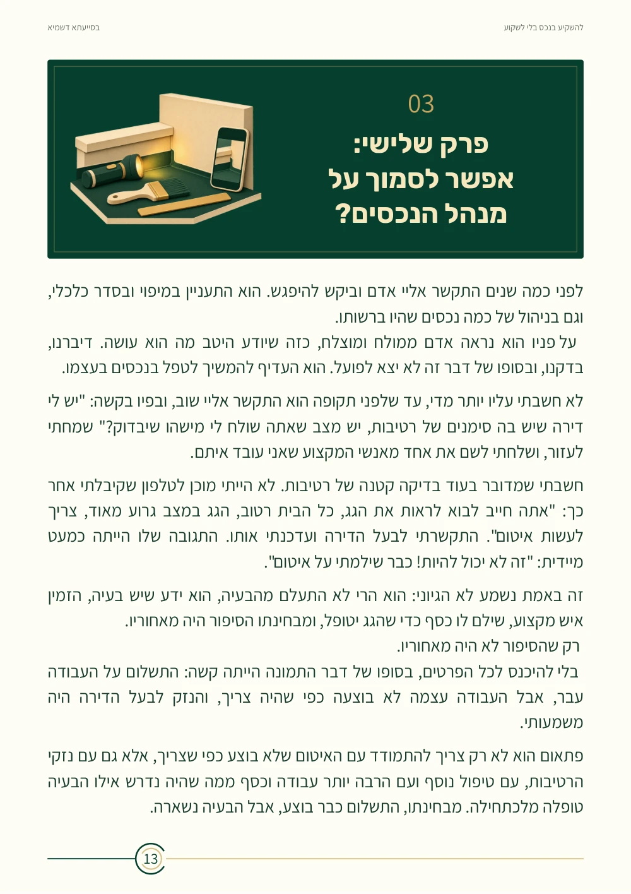

ניהול נכסים
השכרה, קשר עם שוכרים וענייני תחזוקה — מתוך היכרות עם מה שקורה בנכס.
לדבר על ניהול הנכסהדירה להשקעה שלכם.
אתם יודעים מה באמת קורה בה?
ארבעה סיפורים מהשטח על שוכרים, תחזוקה וניהול נכס מרחוק. חוברת מאת ישראל פורטנוי, על האחריות שנשארת אצל בעלי הבית.
21 עמודים · לקריאה ולהורדה · ללא הרשמה
 מבט מקרוב על מה שקורה אחרי הרכישה
מבט מקרוב על מה שקורה אחרי הרכישה
דירה להשקעה לא חייבת להיות עבודה במשרה מלאה. אבל היא גם לא צריכה להפוך להפתעה.
דרך ארבעה סיפורים מהשטח, החוברת מזמינה לעצור, לשאול את השאלות הנכונות ולהישאר מחוברים למה שקורה בנכס.
מי גר בדירה, מי מחזיק במפתח ומה קורה עם השכירות — גם כשהנכס רחוק.
מה כדאי לשאול לפני שבוחרים שוכרים, ולמה גם מצב הדירה הוא חלק מהסיפור.
מה סוכם, מה בוצע ומה באמת קיבלתם. לא צריך להיות קבלן כדי להתעניין.
לראות את המציאות בשטח ולהבין מה קורה סביב הדירה שלכם.
בעל נכס התקשר לישראל אחרי יותר משנה וחצי שבה התקשה להשכיר דירה שחולקה לשתי יחידות. ישראל הגיע עם המפתח, אבל בשטח מצא רק יחידה אחת.
הכניסה לשנייה הייתה חסומה, והשיחה עם השכן גילתה שהיא הפכה לחלק מביתו. איך מתמודדים עם גילוי כזה, ומה חשוב להבין לפני שמחליטים מה לעשות?
לסיפור המלא בחוברת מבוסס על הסיפור בעמודים 17–20פתחו את החוברת בעמוד קריאה מלא.
גללו ברצף, חפשו בתוכן והמשיכו מהמקום שבו עצרתם.

האדם שמאחורי המפתחפרק שני / עמ׳ 9
אמון, עם עיניים פקוחותפרק שלישי / עמ׳ 13מעדיפים לשמור ולקרוא אחר כך? החוברת זמינה גם כ־PDF.
ישראל פורטנוי מלווה בעלי נכסים ומשקיעים,
בעיקר באזור הצפון.
השכרה, קשר עם שוכרים וענייני תחזוקה — מתוך היכרות עם מה שקורה בנכס.
לדבר על ניהול הנכסבירור מצב הנכס ובחינת האפשרויות, כדי לקבל החלטות מתוך הבנה של המציאות בשטח.
להתייעץ על הנכסליווי בעלי נכסים ומשקיעים בהתמודדות עם השכרה, שוכרים והמציאות בנכס, גם כשהוא רחוק מהבית.
לברר על ליוויאת אופי השירות וההתאמה לנכס שלכם אפשר לברר בשיחה אישית.
אני מלווה בעלי נכסים ומשקיעים, בעיקר באזור הצפון.
יש לכם שאלה על הנכס שלכם? מוזמנים ליצור קשר.